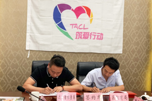
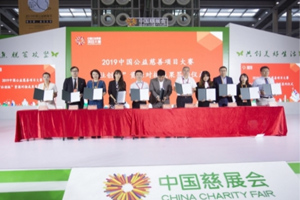

达内教育集团公益事业大记事
-
2020年
春来计划
教育部高校学生司司长表示:“2020年应届高校毕业生有874万，同比增长40万，预计今年上半年就业形势更加复 杂严峻。”面临这样的就业困境，达内集团整合资源、集中力量，推出了公益项目--“春来计划”，助学护航应届大学生圆职业梦想。
-
2019年
张北扶贫公益活动
2019年6月，达内童程童美来到重庆市彭水苗族土家族自治县，参加《编程教育·从小培养》的公益助学活动，向彭水县民族中学、汉葭中学、第二小学、第四小学、万足乡中心校5所中小学捐赠了价值100万元的编程课程及学习用品，助力贫困儿童改变命运；
2019年7月，达内童程童美在湖北省十堰市郧阳区，参加了由北京商报社主办的筑爱郧阳活动，达内童程童美再次伸出援助之手，向郧阳献珍学校捐赠了价值80万元线上课程；
2019年9月，参加“让梦想绽放—蓝视界”张北扶贫公益活动，为大西湾乡贫困小学捐赠电脑，助力贫困地区的孩子们开拓视野，借助电脑与外面世界相连，通过帮助贫困地区的孩子们开拓视野， 从意识上改变对贫困的认知，从而实现真正意义上的脱贫；
情系远山
2019年9月，2019中国公益慈善项目大赛“社创板”资源对接大会在慈善会开幕上举行，情系远山小学英语双师项目——“大山的孩子会英语“荣获2019首期”社创板“挂牌公益项目金奖第一名。作为情系远山的理事单位，达内教育集团也来到了现场，为情系远山公益事业助力，参加了现场签订捐赠协议，捐赠价值500万的物资。
2019年11月，由弘慧教育发展基金会主办第一届官庄镇第一届教育公益年会在怀化沅陵成功举行！北京情系远山公益基金会、北京毅恒挚友大学生志愿服务促进中心协办、达内科技和长沙市实验中学共同参会。现场，心系公益事业的达内科技向沅陵捐赠价值20万元的200台电脑，希望能够让这里的孩子们借助电脑与外面世界相连，通过帮助贫困地区的孩子们开拓视野， 从意识上改变对贫困的认知，从而实现真正意义上的脱贫。这些年达内一直是公益事业的身体力行者
-
2018年
情系远山
2018年达内成为情系远山教育基金会理事单位，并给边远山区的儿童捐赠1,000小时少儿编程课等等；
-
2017年
边远山区远程教育
2017年达内教育集团与友成基金会合作，利用达内远程同步教学模式给边远山区的计算机老师培训，通过培训计算机老师进而提升边远山区的学生的计算机水平；
-
2015年

员工关怀
2015年，达内集团开展了“与病魔赛跑，行动挽救生命”的募捐活动，援助天安门中心优秀同事倪志薇老师的弟弟捐献善款，挽救垂危的年轻生命；
-
2014年
学员关怀
2014年达内资助母亲车祸辍学贫困学员金海红，给已经无钱医治受伤母亲的23岁达内学员金爱红同学送来69704元募捐款，解决了学员的燃眉之急；
-
2012年
公益资助
2012年5月达内再次携手中国残疾人联合会启动第二期达内高端测试班,公益资助30名学生;近些年,达内将公益事业融入到员工的文化,不断通过各种手段帮助家境贫寒的学生和农村学生；
2012年，达内得知佳木斯第十九中学老师张丽莉舍身救学生的事件后，第一时间向相关公益慈善为最美女教师组织捐款。达内自成立以来，达内累计捐款已经数千万，资助5万名多名贫寒学子接受高端IT培训，改变了他们的命运；
-
2011年
公益资助
达内获得高盛三轮融资后，启动了“阳光计划”，希望帮助更多优秀的贫困学生接受高端IT教育；
2011年11月，达内与中国残疾人联合会携手启动第一期达内高端PHP软件工程师班,公益资助25名肢体残疾的学生学习达内高端PHP课程,学员毕业后基本就业, 其中视力有障碍的甄智博成功入职湖南大厦，获得3500元的月薪、双腿残疾的吴鑫4000入职中科创达；
-
2008年
暖冬工程
四川汶川地震发生后，达内第一时间向灾区的学生发出援手,免费资助多名灾区学生参加高端IT培训,对于经济特别困难的学生达内还给发生活费；
2008年10月，达内推出“暖冬工程”帮助近万名大学生实现理想就业，改变自己的命运；
相关新闻
查看更多 >
-
27 2020-04
技术赋能教育，第十三届达内教育校企合作高峰论坛在长沙隆重召开
2020年的开头注定是灰暗的，新冠肺炎来势汹汹，打乱了许多企业和个人的计划... -
26 2020-04
技术赋能教育，第十三届达内教育校企合作高峰论坛在长沙隆重召开
2020年的开头注定是灰暗的，新冠肺炎来势汹汹，打乱了许多企业和个人的计划... -
25 2020-04
技术赋能教育，第十三届达内教育校企合作高峰论坛在长沙隆重召开
2020年的开头注定是灰暗的，新冠肺炎来势汹汹，打乱了许多企业和个人的计划... -
24 2020-04
技术赋能教育，第十三届达内教育校企合作高峰论坛在长沙隆重召开
2020年的开头注定是灰暗的，新冠肺炎来势汹汹，打乱了许多企业和个人的计划...